Robot learning models have been proliferating with increasingly stronger results for both generalist and specialist policies. However, true deployment potential of these learned policies is still unknown. As the community closes in on translational research, it is now ever more crucial to develop mechanisms that not only enable interpretability but intervention as well, e.g., through concept bottleneck models. In this work, we present an initial investigation along the lines of an interpretable spatial concept bottleneck that acts as a meaningful intermediate representation between a perception-planning backbone and an action head. Specifically, we define a spatial concept as a geometric relationship between entities corresponding to the task and the robot, which can be computed directly from the scene's geometry, and instantiate it for both navigation and manipulation. We present a series of experiments demonstrating that such a spatial concept bottleneck maintains original performance (without the bottleneck), while serving as an interpretable interface through which humans or VLMs can intervene to correct or steer the robot.
We define a spatial concept as a geometric relationship between entities corresponding to the task and the robot, which can be computed directly from the scene's geometry. The perception backend \(g\) predicts the spatial concept \(\hat{c}\) and the actor/controller head maps the concept and optionally the proprioceptive state \(\rho_t\) to action \(\hat{y}_t = f(\hat{c}_t, \rho_t)\). The robot executes \(\hat{y}_t\), observes \(o_{t+1}\), and the loop repeats.
\[ c^k_t = \psi\big(a^k_t, r\big), \qquad r \in R_t \]The task mandates an exocentric entity \(a^k_t\), such as a navigation sub-goal or a destination point for the gripper, and the robot provides an egocentric entity \(r\).
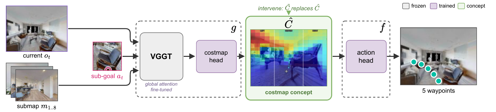
We define a spatial concept bottleneck for navigation as a visual representation of navigation affordances in the robot's current view. Here, the only anchor is the sub-goal, the pixel with the shortest path to the goal in the eight traversal frames nearest to the robot, and the egocentric entity is the 3D point \(X_t(u)\) of each pixel \(u\) of the current view. We average the cost over the patches of a \(16 \times 16\) grid on the current view and min-max normalize per image, as in ObjectReact.
For navigation, what matters is the path length from a pixel to the goal around obstacles, but the perception backend, VGGT, predicts 3D Euclidean geometry and cannot see beyond walls or the provided views. We therefore pick the sub-goal by path length and keep the costmap Euclidean, the straight-line distance to that sub-goal. Since the path to a nearby sub-goal is often close enough to a straight line, we expect this concept to be easier for VGGT to learn than the path length itself.
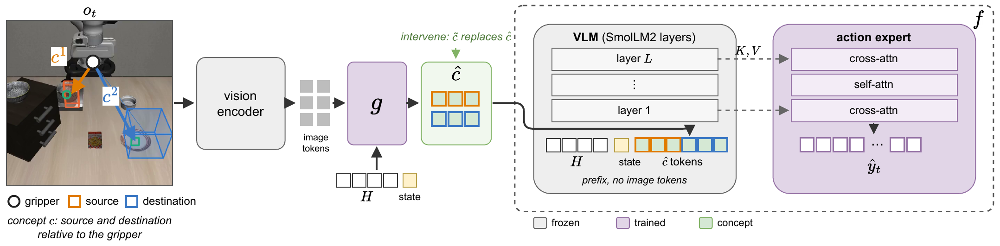
For manipulation, we define two exocentric spatial entities: source and destination, corresponding respectively to the pick and place objects. The source object defines where to act as \(a^1_t\) and the destination defines where to place as \(a^2_t\). We use a single egocentric spatial entity that represents the end effector position \(r_t\), and \(\beta\) discretizes each axis of the difference in positions into 13 bins on a logarithmic scale. The concept therefore consists of six values, the \(x\), \(y\) and \(z\) offsets of the source and of the destination from the gripper. The bins are narrow near the gripper and wide far from it, giving centimetre precision close to the object and a coarse direction elsewhere.
The concept predictor \(g\) is a single cross-attention layer with six trainable query vectors, one for each concept token: the \(x\), \(y\) and \(z\) bins of the source and destination. The queries attend to the image tokens of both cameras from the frozen vision encoder, the robot state, and the word embeddings of the instruction, and each query's output goes to its own classifier over the 13 bins, trained with cross-entropy. The action expert reads only the instruction \(H\), the state \(\rho_t\) and the six concept tokens.
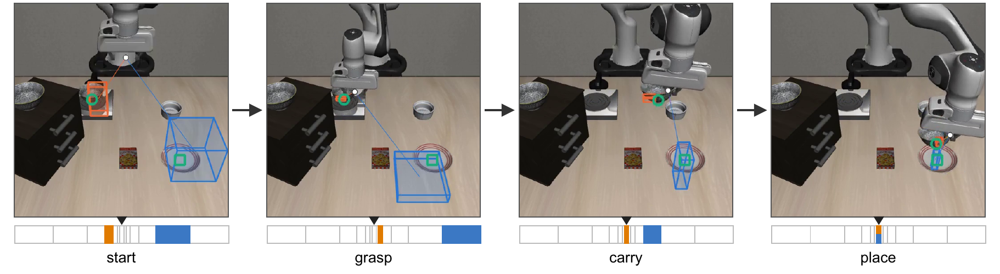
The concept along one rollout (LIBERO-Spatial, true concepts). Each box is the bin \(\beta\) puts the source (orange) or the destination (blue) in, drawn around the gripper. Green represents the object's true position. Below each frame, the 13 bins of one axis to scale, with the source's and the destination's bin. The triangle is the gripper.
Spatial CBM is on par or better than predicting Direct Actions.
| Imitate | Alt Goal | Shortcut | Reverse | Average | ||||||
|---|---|---|---|---|---|---|---|---|---|---|
| Method | SPL | SSPL | SPL | SSPL | SPL | SSPL | SPL | SSPL | SPL | SSPL |
| GT-Geodesics | 96.43±2.34 | 98.78±1.72 | 86.53±4.07 | 91.16±3.20 | 88.42±0.20 | 91.67±1.19 | 82.99±0.32 | 91.97±0.39 | 88.59±1.63 | 93.40±0.83 |
| GT-ED | 72.16±2.00 | 74.58±1.53 | 70.29±4.89 | 78.49±5.94 | 67.76±2.28 | 70.72±3.19 | 68.41±2.51 | 77.53±1.12 | 69.65±1.78 | 75.33±1.35 |
| GT-ED (sub-goal) | 89.36±0.71 | 92.36±0.25 | 82.34±3.23 | 87.64±3.04 | 79.52±0.56 | 81.00±0.35 | 7.87±2.12 | 23.08±0.16 | 64.77±0.60 | 71.02±0.69 |
| Direct Action | 82.61±5.77 | 86.92±3.07 | 59.99±13.07 | 67.84±12.07 | 61.15±5.91 | 71.86±4.21 | 18.41±3.28 | 34.47±2.82 | 55.54±0.47 | 65.28±0.49 |
| Spatial CAM | 87.25±0.03 | 89.70±0.46 | 28.18±7.16 | 41.45±9.01 | 38.13±0.27 | 42.01±0.70 | 7.86±2.25 | 15.71±0.78 | 40.36±1.17 | 47.22±2.00 |
| Spatial CBM* | 80.53±8.69 | 87.78±3.16 | 74.30±3.57 | 80.99±1.40 | 65.29±7.25 | 71.42±3.12 | 13.90±2.30 | 33.72±2.38 | 58.51±4.30 | 68.48±1.82 |
| Spatial CBM | 80.80±2.08 | 86.12±1.82 | 68.27±6.43 | 73.89±5.33 | 73.06±2.69 | 80.29±1.80 | 19.38±10.22 | 33.73±9.12 | 60.38±5.36 | 68.51±4.52 |
SPL and SSPL on four navigation tasks, mean and standard deviation over two seeds on all 126 episodes (32 Imitate, 32 Alt-goal, 31 Shortcut, 31 Reverse). Best non-oracle scores are in bold. GT-Geodesics and GT-ED have no sub-goal and give the distance to the final goal along the shortest path and in a straight line, respectively. GT-ED (sub-goal) is the true concept, and every learned row uses the same sub-goal.
With our own true concept, GT-ED (sub-goal), the controller does better than every learned variant on Imitate, Alt-goal and Shortcut. This implies that having the spatial concept as an intermediary is in itself not a performance bottleneck, rather it is the lack of the ability to predict perfect concepts. GT-ED (sub-goal) fails only on Reverse, where the sub-goal is often behind the robot. The straight-line distance to a point behind the robot is lowest at the pixels nearest the robot, so the costmap gives no signal to turn around.
With true concepts the spatial bottleneck performs on par with Direct Action, and swapping the source and destination brings the GT policy down to 4.5%.
| Method | T1 | T2 | T3 | T4 | T5 | T6 | T7 | T8 | T9 | T10 | Average |
|---|---|---|---|---|---|---|---|---|---|---|---|
| GT | 100.0±0.0 | 97.5±3.5 | 100.0±0.0 | 95.0±0.0 | 75.0±7.1 | 25.0±0.0 | 97.5±3.5 | 100.0±0.0 | 87.5±17.7 | 70.0±7.1 | 84.8±2.5 |
| Direct Action | 97.5±3.5 | 100.0±0.0 | 97.5±3.5 | 97.5±3.5 | 70.0±7.1 | 27.5±3.5 | 92.5±10.6 | 95.0±0.0 | 82.5±3.5 | 77.5±10.6 | 83.8±1.8 |
| Spatial CBM* | 95.0±7.1 | 95.0±0.0 | 92.5±10.6 | 90.0±7.1 | 65.0±0.0 | 15.0±0.0 | 95.0±7.1 | 92.5±3.5 | 75.0±7.1 | 57.5±3.5 | 77.2±2.5 |
| Spatial CBM | 90.0±0.0 | 85.0±0.0 | 95.0±0.0 | 90.0±7.1 | 62.5±3.5 | 12.5±3.5 | 95.0±0.0 | 87.5±10.6 | 75.0±7.1 | 57.5±3.5 | 75.0±0.7 |
| Intervention | |||||||||||
| Spatial CBM, intervened | 95.0±0.0 | 87.5±3.5 | 97.5±3.5 | 95.0±0.0 | 67.5±3.5 | 17.5±3.5 | 97.5±3.5 | 95.0±0.0 | 82.5±10.6 | 62.5±3.5 | 79.8±2.5 |
| Ablations | |||||||||||
| No concept | 90.0±7.1 | 80.0±7.1 | 87.5±3.5 | 85.0±0.0 | 62.5±3.5 | 15.0±0.0 | 90.0±7.1 | 72.5±3.5 | 62.5±3.5 | 37.5±3.5 | 68.2±2.5 |
| GT, swapped† | 40.0 | 0.0 | 0.0 | 5.0 | 0.0 | 0.0 | 0.0 | 0.0 | 0.0 | 0.0 | 4.5 |
Success (%) on the ten LIBERO-Spatial tasks over two training seeds (†one seed), with 200 episodes per seed. Best non-oracle scores are in bold.
With predicted concepts, both Spatial CBM* and Spatial CBM fall below Direct Action. As in navigation, this gap comes from predicting the concept and not from the bottleneck itself, and intervening on the concept recovers part of it. When objects are moved 5–10 cm away from their positions in the demonstrations (table (b) below), true concepts still guide the robot at least as well as Direct Action, but the concept predictor makes more errors and Spatial CBM falls below Direct Action, so here as well the limit is the concept predictor.
| (a) Action expert reads | GT (\(c\)) | Spatial CBM* (\(\hat c\)) | Steering |
|---|---|---|---|
| Concepts | 85.8±0.4 | 79.8±1.8 | 93.5±2.1 |
| Images + concepts | 86.5±0.0 | 80.8±1.1 | 42.8±8.1 |
| Images | 61.5 | – | – |
| Neither | 4.5 | – | – |
| (b) Method | Bowl | Bowl + plate |
|---|---|---|
| GT | 45.5±3.5 | 16.8±3.2 |
| GT, one sentence | 68.0±1.4 | 25.1±2.8 |
| Direct Action | 28.5±2.1 | 15.3±1.1 |
| Spatial CBM* | 28.5±3.5 | 7.3±1.1 |
| Spatial CBM | 23.5±0.7 | 3.3±0.4 |
Success (%). (a) Where the bottleneck sits, for the policy trained with a single sentence shared across all ten tasks, so that the instruction does not name the bowl. (b) The bowl, or the bowl and the plate, moved 5–10 cm from their positions in the demonstrations.
The key benefit of the bottleneck structure of CBMs is that they allow intervention of human-interpretable concepts at test time. They provide insight into the model's intent which it has to use to generate outputs. The intervener is provided all information of \(x_t\) and the predicted spatial concept \(\hat{c}_t\), and the oracle has additional access to the true concept \(c_t\). Based on the design of the spatial concept bottleneck, the intervener provides exocentric entities \(\tilde{a}^k_t\), while the robot's own ego entities are unchanged. We are thus able to re-generate the entire concept on intervention without changing all the exocentric entities.
\[ \tilde{c}^k_t = \psi\big(\tilde{a}^k_t, r\big), \qquad \tilde{y}_t = f(\tilde{c}_t, \rho_t) \]In manipulation, the intervener provides the source or destination point \(\tilde{a}^k_t\), and the concept is regenerated. We use the oracle as the intervener and test three uses of the same operation. For correction, the oracle provides the true source and destination points at every step. For steering, we train the action expert with a single sentence shared across all ten tasks in place of the instruction, so that the concept is the only input that tells the robot which bowl to pick, and the oracle provides the position of the other, identical bowl as the source. For an unseen object, the oracle provides the position of the ramekin, which is never moved in any demonstration, and we compare against Direct Action whose instruction asks for the ramekin.
Editing the source concept makes the robot place the other bowl in 93.5% of the episodes. Keeping the image tokens along with concepts gives about the same success, but steering then works only in some tasks, as the images pull the robot back to the bowl it was trained on (table (a) above). For the unseen object, the robot places the ramekin in 67.0% of the episodes, against 7.0% for Direct Action.
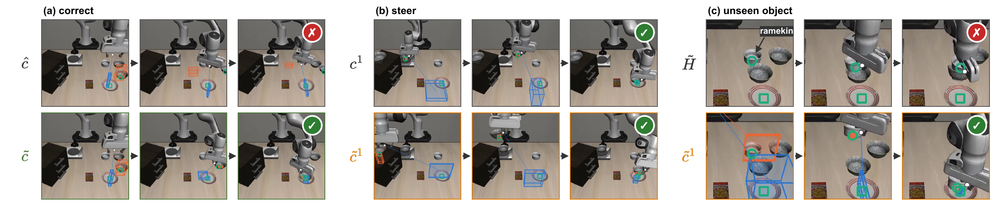
(a) Correction: the robot fails with the predicted concept \(\hat c\) and succeeds with the corrected \(\tilde c\).
(b) Steering: the intervener provides the other, identical bowl as the source \(\tilde a^1_t\), and the robot places that bowl instead.
(c) Unseen object: Direct Action does not place the ramekin when its instruction \(\tilde H\) asks for it, whereas providing the ramekin as the source \(\tilde a^1_t\) makes the robot place it.
We split the spatial concept bottleneck of navigation, the costmap, into three sectors: left, center, and right, which map the three most common commands an intervener would likely give. Each sector is a column which spans five, six, and five pixels respectively of the \(16\times16\) costmap. Every five steps, the intervener is allowed to pick a sector. The sub-goal is replaced by the lowest-cost pixel in the middle of that sector as \(\tilde{a}^1_t\), and the costmap is recomputed as each pixel's Euclidean distance to it. The controller keeps using this costmap until the intervener is asked again.
We use Claude Opus 5 as the VLM intervener. It is provided the last six camera frames taken five steps apart, eight frames from the earlier traversal, the current view, the sub-goal-containing view, and the final destination image. Most importantly, Claude is provided only the predicted costmap \(\hat{c}_t\) (and never the true costmap \(c_t\)) to propose an intervention. It is required to output “none” if no change is required, or the proposed sector along with a brief reasoning. The trigger is tested in two cases: with the oracle gate, where the oracle detects differences between the predicted and true costmaps and triggers the intervention, and without it, where Claude decides at every check.
Without edits, Spatial CBM succeeds in 84 of the 126 episodes. The oracle's intervention fixes six episodes and breaks one. When Claude is triggered on oracle disagreement, it fixes ten episodes and breaks three. When Claude is ungated, it still fixes ten episodes but breaks 16, eight of them on Alt-goal.
Each video shows one episode without (left) and with (right) intervention: the RGB view and the costmap (blue is low cost, white square: least-cost cell).
We test the navigation setup on a Unitree Go2 in a home, run open loop on recorded data. We record a mapping run and three repeat runs of the same route. We use the frames from these three runs to see where we can intervene.
The setup is the same as in simulation, except the sub-goal comes from A* on the robot's lidar floor map instead of the navigation mesh. The model is the same one, trained only in simulation.
We gave Claude (Opus 5.5) the same inputs as in the navigation intervention (current view with the predicted costmap, sub-goal frame, destination) on 8 frames taken just before the robot turns. It reasoned for an edit on 3 of them, and each edit moved the costmap minimum where Claude intended. In one, the minimum was on a bed and Claude answered “center”, since “the white air purifier from the destination picture stands on open floor at the right edge of the center region”. On the other 5 it said “none”.
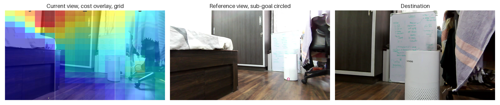
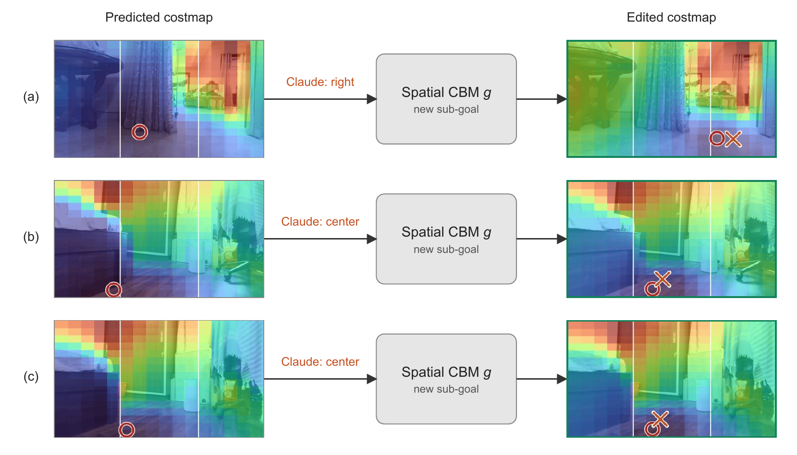
Each panel shows one decision of Claude, with its stated reason at the top and the traversal frames it was given below. Left: what Claude saw, the current view with the predicted costmap, where + marks its minimum. Middle: Claude's choice, where the circle marks the new sub-goal. Right: the reference and destination frames. We include failures as well.
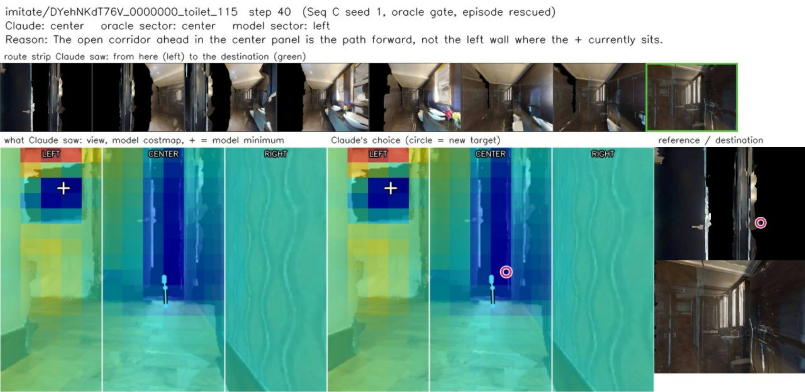
Imitate: Claude moves the costmap's minimum off a wall onto the corridor, which is also the oracle's sector.
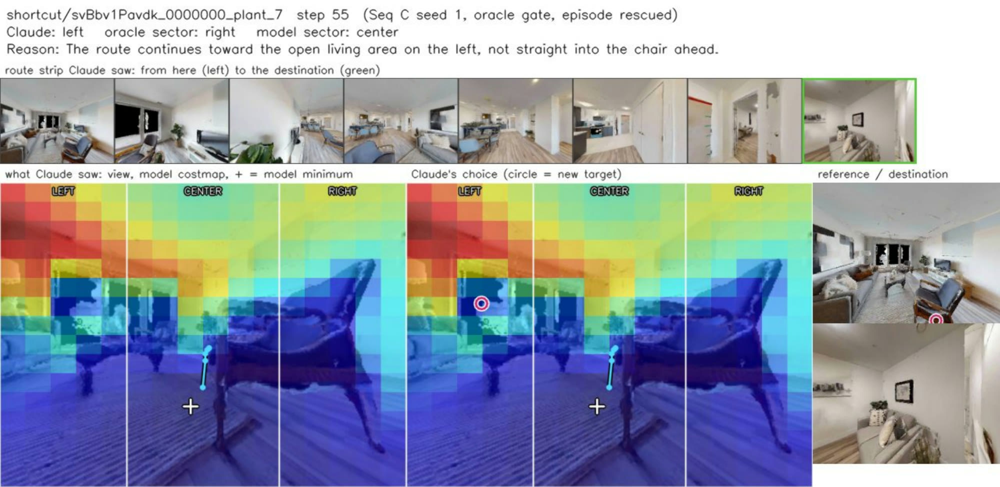
Shortcut: Claude steers the robot off the furniture toward the open living area, against the oracle's sector.
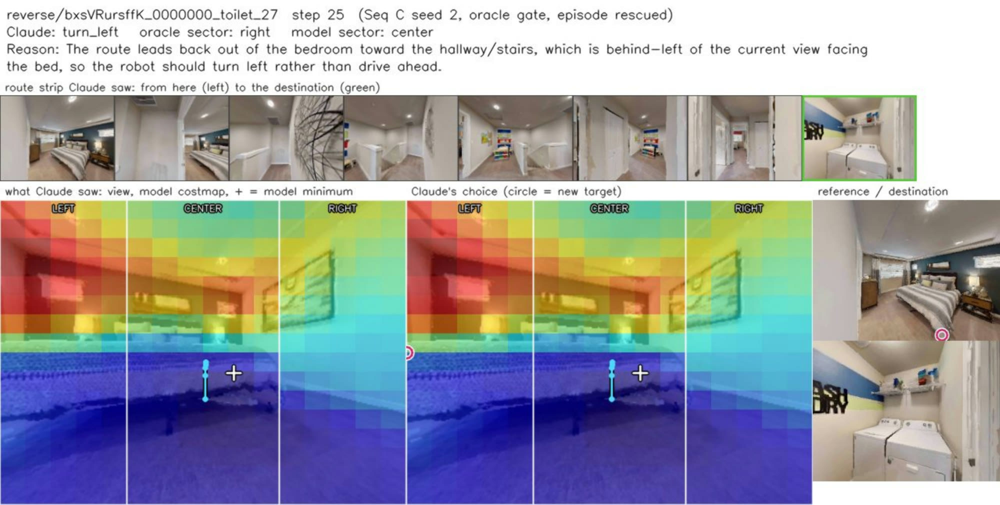
Reverse (second training seed): Claude recognizes that the way out of the bedroom is behind and to the left.
Claude's stated reason shows why. In Alt-goal the goal is not at the end of the recorded route, so relying on the route frames over the destination image misleads the VLM.
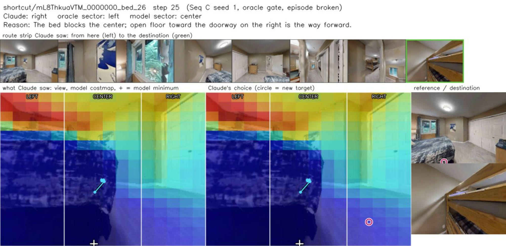
Shortcut: “The bed blocks the center, open floor toward the doorway on the right is the way forward.” Claude follows the doorway seen in the route frames, while the shorter path to the goal goes left.
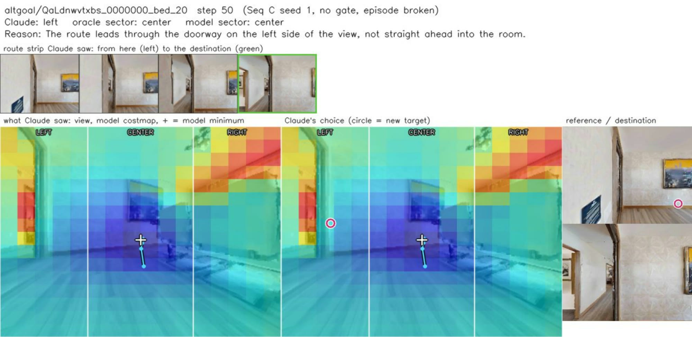
Alt-goal: the predicted costmap was already correct, and Claude follows the route frames toward a doorway on the left, although the goal lies ahead.
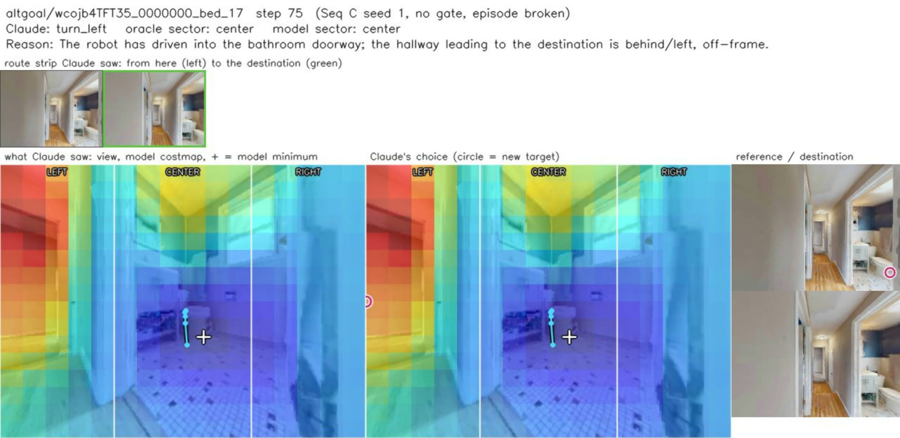
Alt-goal: “The robot has driven into the bathroom doorway.” Claude follows the route frames back toward the hallway, although the goal lies ahead.
The boxes show the bins the concept assigns to the source (orange) and the destination (blue) around the gripper, and green marks each object's true position.
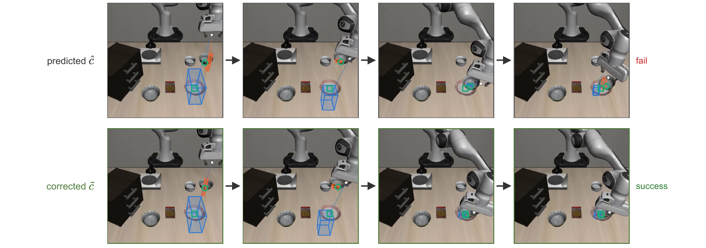
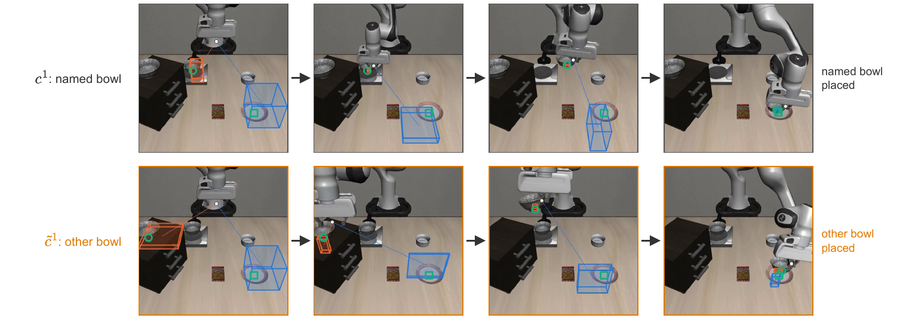
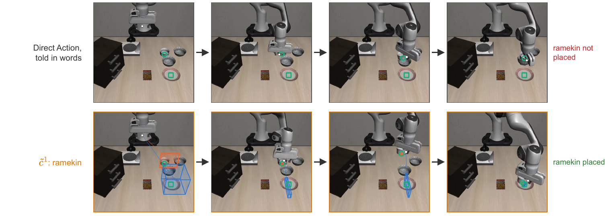